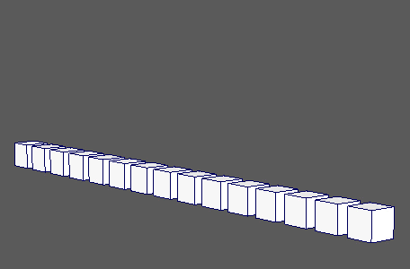

用于继承对象的动画，然后及时偏移。
MASH 延迟(MASH Delay)
-
延迟模式(Delay Mode)
- 设置延迟方法。选项包括：
- 法线(Normal)：在网络中逐对象实例延迟连接节点的效果。
- 跟随引线(Follow the leader)：延迟时将对象实例设置为跟随引线对象。
-
时间步(Time Step)
- 控制总延迟时间（以帧为单位）。
-
时间变化(Time Variance)
- 控制逐对象添加到时间步的随机度量。
-
时间偏移(Time Offset)
- 时间步的向后偏移。
-
延迟位置(Delay Position)、延迟旋转(Delay Rotation)、延迟缩放(Delay Scale)
- 指定要延迟的通道。
引线(Leader)
用于设置当“延迟模式”(Delay Mode)设置为“跟随引线”(Follow the leader)时供 MASH 网络跟随的对象。
-
目标(Target)
- 显示供网络跟随的对象。可以通过以下任一方式指定当前选定的对象：按住鼠标中键将其拖动到此字段；或者通过在该字段上单击鼠标右键并单击“连接”(Connect)。
强度(Strength)
-
强度(Strength)
- 同时减弱对所有对象的节点效果。
-
随机强度(Random Strength)
- 按随机顺序平滑地减弱所有对象的节点效果。
-
阶跃强度(Step Strength)
- 每次禁用一个对象的节点效果。
-
强度贴图(Strength Map)
- 确定输入文件（2D 纹理、动画纹理等）来控制该节点的效果的形状。
-
贴图投影轴(Map Projection Axis)
- 确定投影“强度贴图”(Strength Map)时所沿的轴。
-
贴图辅助对象(Map Helper)
- 显示用于在场景中交互放置“强度贴图”(Strength Map)的对象。可以在该字段上单击鼠标右键来创建新的辅助对象（平面）（如果不存在）。还可以使用鼠标中键将网格拖入此字段，或者单击鼠标右键连接选定网格。如果网格已连接，还可以单击鼠标右键来断开其连接或者将其显示在大纲视图中。
注： 为获得最佳结果，请将相同的纹理指定给“强度贴图”(Strength Map)和“贴图辅助对象”(Map Helper)（在创建新的辅助对象时将自动执行此操作）。